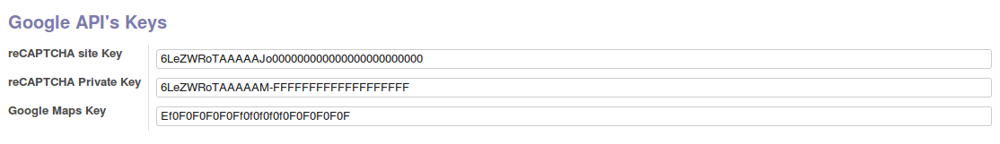

<section class="oe_container">
    <div class="oe_row">
        <h2 class="oe_slogan">Odoo Website Google API's</h2>
        <h4 class="oe_slogan"><a href="https://www.eiqui.com">By Soluci&oacute;ns Aloxa S.L.</a></h4>
            <p>
            	Module based in 'website_recaptcha_reloaded' by <a href='https://www.techreceptives.com'>Tech Receptives</a><br/><br/>
                This module allows you to integrate Google API's to your website pages.<br/>
                You can configure your Google API's Keys in "Settings" -> "Website Settings".<br/>
                You can access keys via 'request.website.' in controller and 'website.' in qweb template.<br/>
                The module auto-loads the apropiate Javascript Library from Google.
            </p>
            <ul>
                <li><i>website.recaptcha_private_key</i> (Recaptcha Private Key)</li>
                <li><i>website.recaptcha_public_key</i> (Recaptcha Public Key)</li>
            	<li><i>website.google_maps_key</i> (Google Maps App Key)</li>
            	<li><i>website.google_oauth2</i> (Google OAuth 2.0 Key)</li>
           	</ul>

            <div class="oe_row_img oe_centered oe_mt32">
                
            </div>
    </div>
</section>
